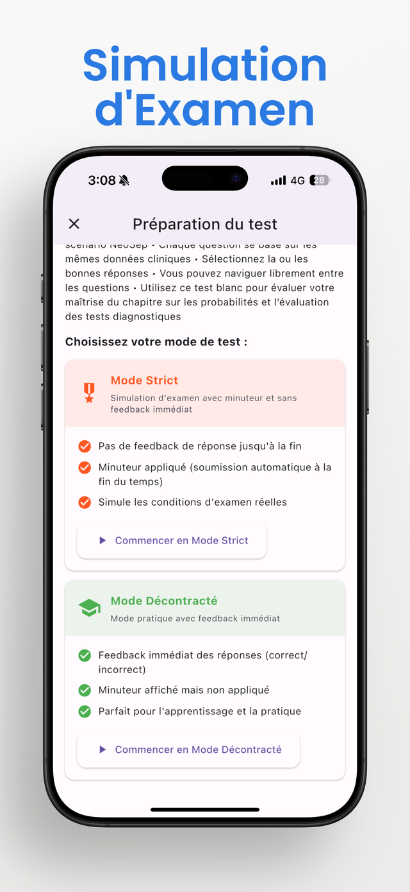

L'examen, c'est un chrono et pas de seconde chance. Entraînez-vous dans les mêmes conditions.

Deux façons de réviser
Two ways to work:
📚 Révision par thème
Choisissez un thème, répondez à votre rythme, la correction expliquée arrive après chaque question.
Study by topics, instant feedback.
⏱️ Examen blanc
Chronomètre activé, aucune correction avant la fin : vous découvrez votre score à la remise de la copie. Comme le jour J, et c'est voulu.
Mock exam: timer on, answers at the end.
Au programme
The topics, exactly as they appear in the app:
0.1Nombres, risques et tests en médecine
Numbers, Risks and Tests in Medicine
0.2Fondements probabilistes des statistiques médicales
Probability Foundations for Medical Statistics
1.1Introduction à la performance des tests médicaux (Se, Sp, VPP, VPN)
Intro to Medical Test Accuracy (Se, Sp, PPV, NPV)
1.2Probabilités et évaluation des tests diagnostiques
Probability and Diagnostic Test Evaluation
1.3Paradoxes des tests diagnostiques et pièges de l'intuition
Diagnostic Test Paradoxes & Intuition Traps
Tests d'hypothèses, valeurs p et intervalles de confiance
Hypothesis Testing, p-values & Confidence Intervals
Risque relatif, odds ratio et NNT
Relative Risk, Odds Ratio & NNT
...et la banque de questions continue de s'agrandir.
Apprendre gratuitement
Learn for free:
🎛️ Simulateurs interactifs
Déplacez un curseur - ou un patient - et regardez la VPP, le NNT, la courbe ROC ou une courbe de survie réagir. Le moyen le plus rapide de sentir pourquoi les chiffres se comportent ainsi.
💥 Stat Fails
Des cas documentés où une erreur statistique a eu des conséquences réelles, avec les sources et le raisonnement détaillé.
📖 Cours et sources
ROC et AUC expliqués depuis zéro pour les cliniciens, et les vraies études derrière chaque chiffre de nos calculateurs.
Chaque thème clé, deux modes d'examen, français et anglais - dans votre poche avant la prochaine révision.
Télécharger sur iPhone